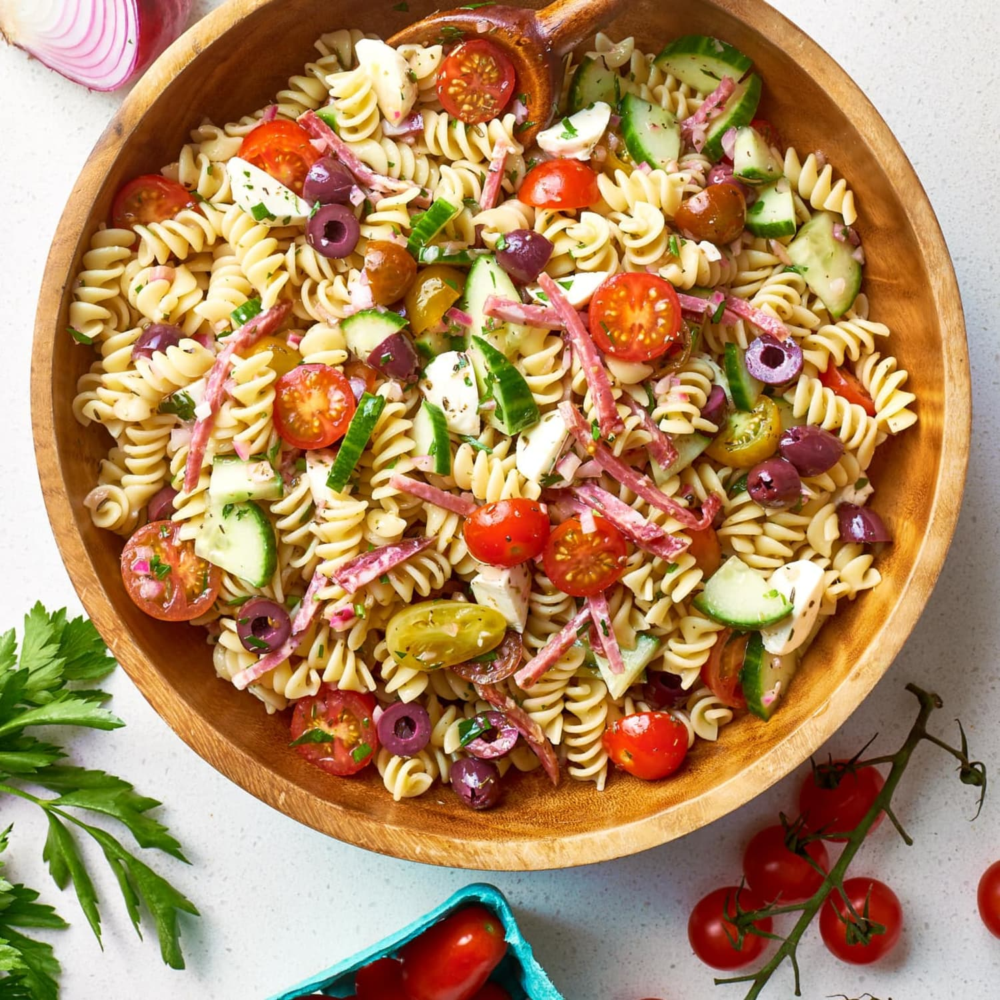

Pasta Salad

A pasta salad
Just like Nonna used to make it, or an old friend I guess
This pasta salad recipe was given to me by a dear friend many years ago, and I've been making it ever since! It's great for barbecues.
Ingredients
Wondering what goes in pasta salad? These are the ingredients you’ll need:
1 pound tri-colored spiral pasta
1 (16 ounce) bottle Italian-style salad dressing
2 cups cherry tomatoes, diced
1 green bell pepper, chopped
1 red bell pepper, diced
½ yellow bell pepper, chopped
1 (2.25 ounce) can black olives, chopped
How to cook
Oh, we cookin' alright
- Gather all ingredients.(Not really a cooking step is it?)
- Bring a large pot of lightly salted water to a boil. Cook pasta in the boiling water, stirring occasionally, until tender yet firm to the bite, about 10 to 12 minutes; rinse under cold water and drain.
- Whisk Italian dressing and salad spice mix together until smooth. Combine pasta, tomatoes, bell peppers, and olives in a salad bowl.
- Pour dressing over salad and toss to coat.
- Refrigerate salad, 8 hours to overnight.
- Enjoy! (Don't think this counts as cooking either!)